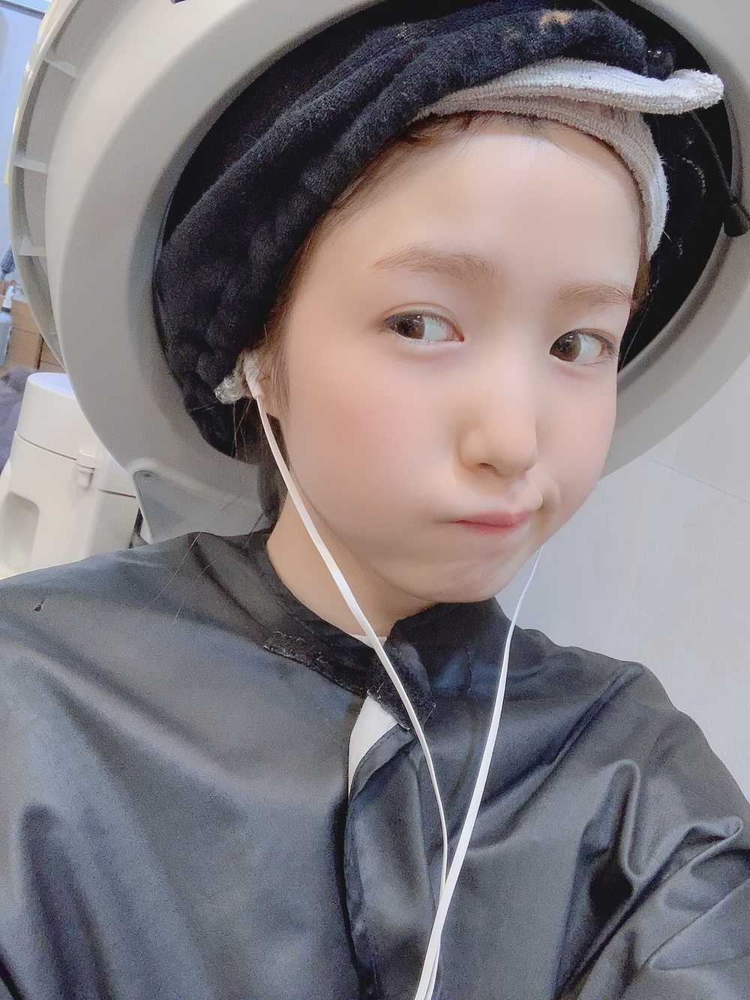

やっほ〜🙋🏻♀️
ひいだよ🍓

トリートメントしましたので
髪がさらさらです〜✨
口の色なさすぎるし眉毛も描いてないので
ふさふさ感が伝わるㅋㅋㅋㅋ
ちなみに眉毛は
染めたてホヤホヤです〜💁🏻♀️
では質問タイム行きますよ！
Q. 遊園地で好きなアトラクションは？
A. あまり遊園地行きたい行きたい！って感じの
人間ではないのですが…🙂
ジェットコースターも空中ブランコとかも
割といけるタイプだし
絶叫系もその日の健康状態が良ければ
全然OKタイプ🙆🏻♀️
好きなのを一つ挙げるなら…
メリーゴーランド🎠ㅋㅋㅋㅋ
優雅な感じが好きです😊
コーヒーカップは
気持ち悪くなるから苦手かな🙂💦
あとお化け屋敷も嫌いです💀
終始目瞑って入って
ずっと前の人に捕まってる🙋🏻♀️
なんも見えないけど
みんなが叫ぶ時に共に叫びます😀
怖かったね〜ってみんなが話してるときに
「あれ、自分なんであんな叫んでたんだ？」って毎回のようになりますㅋㅋㅋ
Q. ひぃが今楽しみにしてるのは何ですか?
A. 今日の夜ごはん🤤
マネージャーさんが
リコッタチーズサラダを買ってきてくださいました😭😭😭😭
なんて優しいのだ。。。
だからそれを食べるのが楽しみです🥗
Q. 韓国の生活で驚いたことはなんですか?
A. とにかくタクシーや地下鉄の値段が
安すぎる😳😳😳
ひいの経験上だと地下鉄は
どんなに遠くに行っても
150円越えたことない気がする🤔
ひいがそんなに遠く行ってないだけか？笑
韓国語での質問たくさん頂くのですが
日本語での質問も待ってます🥺💦笑
ひいに対して気になること
もうないか…🙃号泣
待ってるよん😺
오늘의 질문👐🏻
Q. 최근 히유리에피소드 있어요??
A. 지금 유리한테 이어폰 빌리고 있어요ㅋㅋㅋ
평소에는 에어팟을 쓰고 있는데 요즘
고장 난 것 같아서...😢
잠시 유리한테 빌렸어요ㅠ
이 메일의 1번째 사진에서
끼고 있는 것도 유리꺼 🐹🐹🐹
착한 우리 유리 고마웡🍊
Q. 동물의숲 어떤 멤버가 제일 열심히 하는 거 같아?🤔
A. 꾸라언니요!!!ㅋㅋㅋ
지금도 제 옆에서 하고있음😀👐🏻
재밌다고 하니까 저도 계속 보고있더니
저도 하고싶어졌네요ㅎㅎㅎ
방금 꾸라언니가 과일로 가구 같은 것도
만들 수 있다고 알려줬어요!!
대박인데!?😳😳😳
나도 복숭아로 뭔가 만들고 싶다🍑
너무 귀여운 것 같애🥰
근데...
아이패드로 할 수 없나...🤔
저는 인상에서 한번도 게임기를 갖고 있던 경험이 없어서 사용방법도 모르고...ㅋㅋㅋ
아이패드로 할 수 있으면 좋겠다!!!
(절대 못 해😀)
Q. 한국에서 꼭 가보고 싶은 장소가 있어?
A. 있어요!!!
제가 요즘 그릭요거트에 빠져있어서...
땡스오트 라는 한국에서 유명한
요거트집에 가보고 싶어요!!!🥰
“요거트 맛집” 라고 검색해봤더니
거기 엄청 많이 나왔더라고요🥺
너무 맛있겠다🤤💜
그리고 서울이 아닌 곳에도 가보고 싶어요😳
이 메일의 1번째 사진에서
끼고 있는 것도 유리꺼 🐹🐹🐹
착한 우리 유리 고마웡🍊
Q. 동물의숲 어떤 멤버가 제일 열심히 하는 거 같아?🤔
A. 꾸라언니요!!!ㅋㅋㅋ
지금도 제 옆에서 하고있음😀👐🏻
재밌다고 하니까 저도 계속 보고있더니
저도 하고싶어졌네요ㅎㅎㅎ
방금 꾸라언니가 과일로 가구 같은 것도
만들 수 있다고 알려줬어요!!
대박인데!?😳😳😳
나도 복숭아로 뭔가 만들고 싶다🍑
너무 귀여운 것 같애🥰
근데...
아이패드로 할 수 없나...🤔
저는 인상에서 한번도 게임기를 갖고 있던 경험이 없어서 사용방법도 모르고...ㅋㅋㅋ
아이패드로 할 수 있으면 좋겠다!!!
(절대 못 해😀)
Q. 한국에서 꼭 가보고 싶은 장소가 있어?
A. 있어요!!!
제가 요즘 그릭요거트에 빠져있어서...
땡스오트 라는 한국에서 유명한
요거트집에 가보고 싶어요!!!🥰
“요거트 맛집” 라고 검색해봤더니
거기 엄청 많이 나왔더라고요🥺
너무 맛있겠다🤤💜
그리고 서울이 아닌 곳에도 가보고 싶어요😳
많이 가본적이 없기 때문에 잘 모르니까
여러분 저에게 추천해주세요❣️
これ載せた気もするごめん
너무 길게 썼네...
죄송해요ㅠ
ばいばーい👋🏻
ひいまる🥟